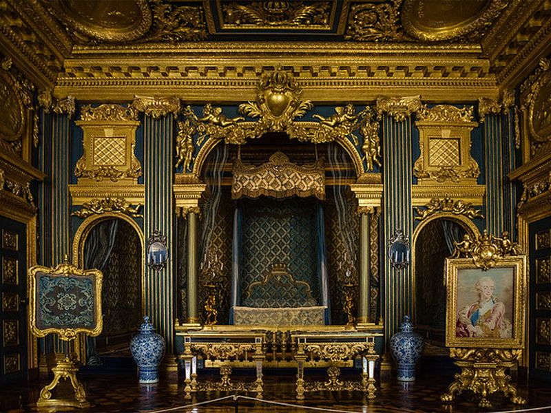
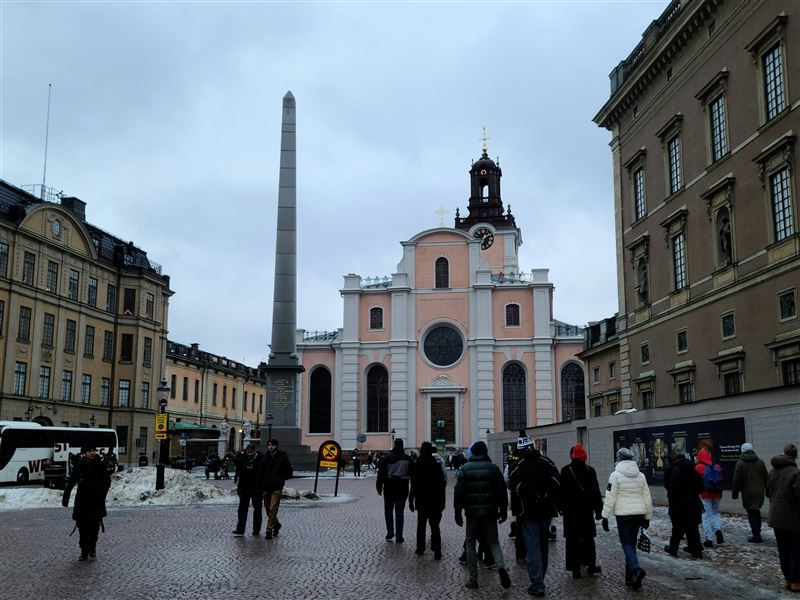
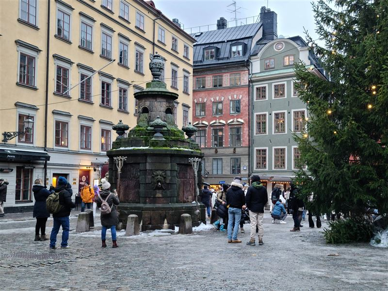
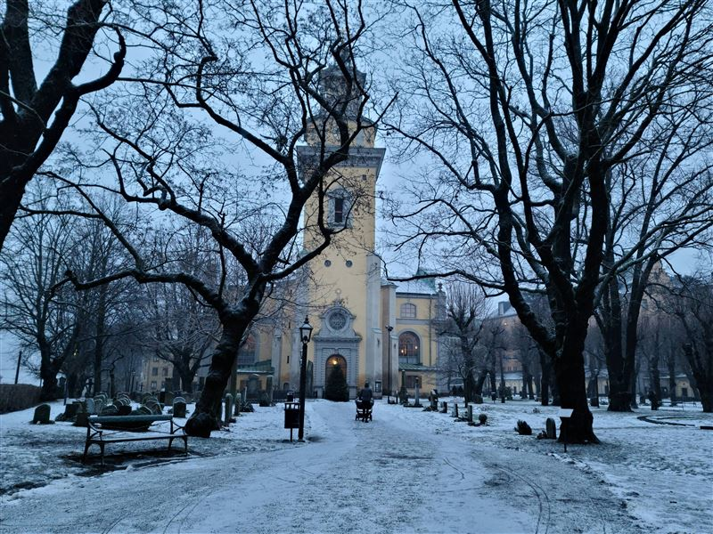
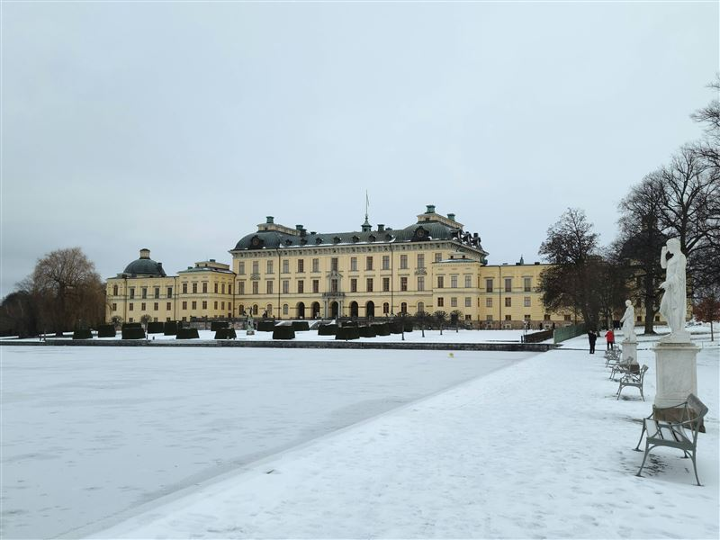

Explore Stockholm
A Brief History
Stockholm was founded in the 13th century on islands between Lake Mälaren and the Baltic, consolidating Sweden's political center by the time of Gustav Vasa in the 16th century. Gamla Stan, royal palaces, and naval yards expanded through Sweden's period as a great power, while 19th-century boulevards and public buildings followed industrial growth. Neutral in both world wars, the city developed welfare institutions and modern design traditions.
Attractions Map
Top Sights & Activities

The Royal Palace
The Royal Palace was rebuilt after a fire in the late 17th and early 18th centuries on the site of Tre Kronor Castle. It remains one of the main official residences of the Swedish monarch and a center of court ceremony. State apartments, the Royal Chapel, and museums of antiquities and treasury objects can be visited when the royal family is not using the rooms.

Storkyrkan
Storkyrkan, Stockholm's cathedral, began in the medieval period and became the main church for royal ceremonies in the old town. Its interior includes later Baroque and Gothic elements tied to the history of the Swedish state church. The silver altar and St George and the Dragon sculpture are focal points for visitors exploring Gamla Stan.

Stortorget
Stortorget has been the main square of Gamla Stan since the medieval period and was a market and administrative center of the old town. Its facades and paving remain tied to the city's early commercial and political life. The well-proportioned merchant houses and narrow side streets radiating from the square preserve Stockholm's oldest urban layout.

St. Mary Magdalene Church
Saint Mary Magdalene Church was founded in the 14th century and rebuilt after fire and wartime damage. It reflects the parish history of Södermalm as Stockholm expanded beyond the medieval core. The church tower is a familiar silhouette on the Söder heights, and the interior preserves fittings from several phases of Lutheran worship and urban growth.

Drottningholm Palace
Drottningholm Palace was built in the late 17th century for the Swedish court and is now a UNESCO World Heritage Site. The palace, theater, and gardens show how royal planning shaped the western approaches to Stockholm. The Chinese Pavilion and Baroque garden layout remain in active use by the royal family while much of the estate is open to the public.